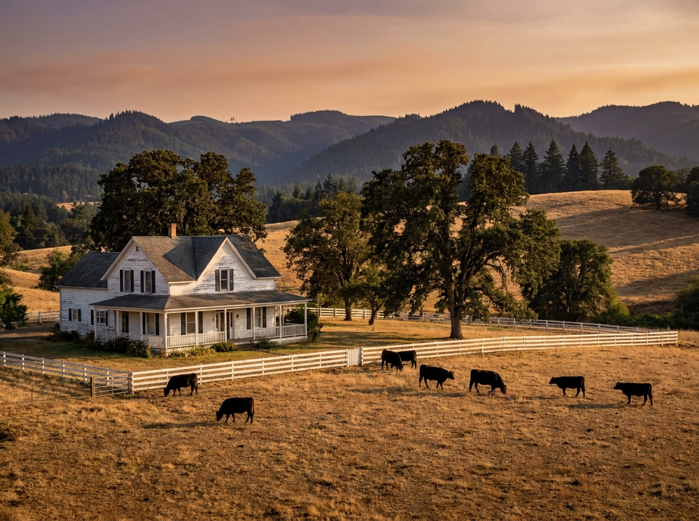

Cattle ranches, hay operations, century farms, and everything with a barn on it. Kimmy grew up around livestock, rides her own horses daily, and understands what makes agricultural ground actually pencil — soils, water, fencing, outbuildings, and farm tax deferral.

In the Umpqua Valley, ranch value comes down to four things: water, soil, fencing, and access. A parcel with senior water rights, class II river-bottom soil, tight fences, and year-round county-road access will outperform a bigger parcel without them every single time. Kimmy evaluates all four before you write an offer — pulling Watermaster records, NRCS soil maps, and county road status so you're negotiating with facts.
Marketing agricultural property is a different craft from listing a house. Buyers need carrying capacity, irrigation history, fence condition, hay production records, and outbuilding specs — presented professionally. Kimmy builds full ranch marketing packages with drone photography, mapped boundaries, water right documentation, and exposure to farm and ranch buyers across Oregon and out of state.
Many Douglas County agricultural parcels carry farm or forest tax deferral, which can cut property taxes dramatically — but disqualification can trigger years of back taxes. Kimmy helps buyers understand what they're inheriting and helps sellers present deferral status clearly so deals don't blow up in escrow.
EFU (Exclusive Farm Use) is Oregon's agricultural zoning. It protects farm ground but limits what can be built — typically requiring a farm-income test or specific dwelling approvals for new homes. What an EFU parcel can and cannot do is knowable in advance — get the answer before you get attached.
Oregon water rights are use-it-or-lose-it and attached to the land, not the owner. A right can be lost after five consecutive years of non-use. Before closing, Kimmy verifies the right's status, priority date, and place of use with the Oregon Water Resources Department — because pasture without water is just dirt.
Yes — depending on soil and irrigation, Umpqua Valley pasture typically runs one cow-calf pair per 2–5 acres on dryland and better on irrigated ground — soil class and water make all the difference.
Farm deferral taxes land at its farm-use value instead of market value — often a fraction of the normal bill. To keep it, you must continue qualifying farm use. If deferral is removed, up to 5–10 years of back taxes can be assessed. Kimmy flags deferral status on every agricultural listing she touches.
Local pages for every Douglas County community Kimmy serves:
Whether you're buying your first five acres or selling the ranch that raised you — call, text, or email. Kimmy answers.
541-643-9509